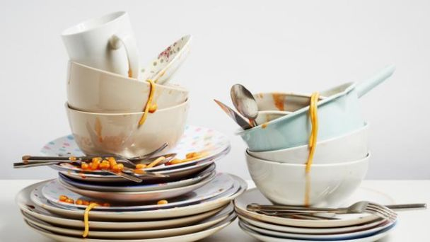

Considero hay una mala organización en la entrega de la charola en el comedor siendo tal que al regresarla esta es depositada en la porta charolas en su totalidad a excepción del vaso. Es decir, en la charola se encuentran restos de los alimentos, bolsa plástica de las tortillas todos los platos que te brindan.
1 una persona dentro del comedor debe hacer la correcta separación de estos elementos teniendo en cuenta que en el almacén Tacubaya el número de colaboradores es cercano a los 800 esta tarea se vuelve un proceso que se puede eliminar.
Colocarcontenedores de separación de residuos orgánicos, plástico y metales, así como bandejas para separar cubiertos, platos de postre y únicamente dejar en la bandeja plato hondo y plato plano.

Una gestión optima de un proceso de comedor.
Alinear con comedor la separación de vajilla, así como buscar una alternativa a brindar las tortillas en una bolsa de plástico para disminuir la utilización de este material quizás servilletas de tela y tener una lavadora industrial para poder lavarlas de forma diaria.